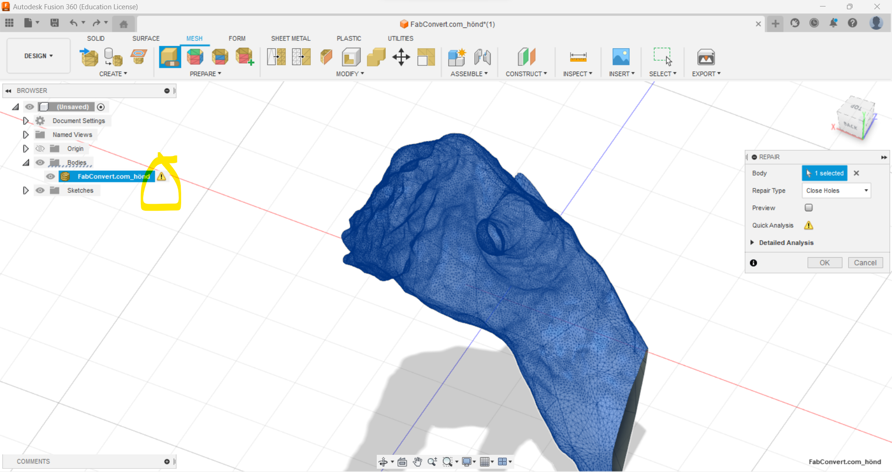
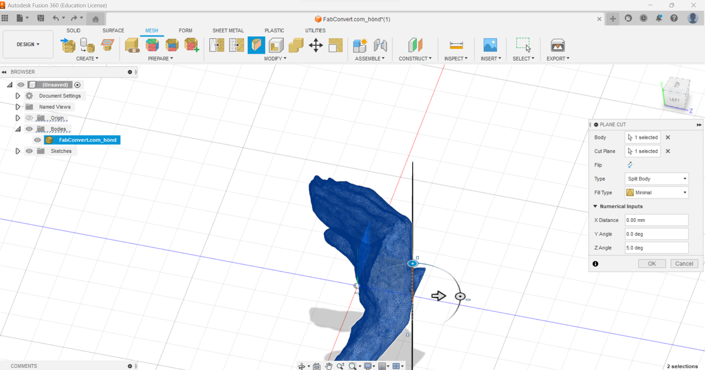
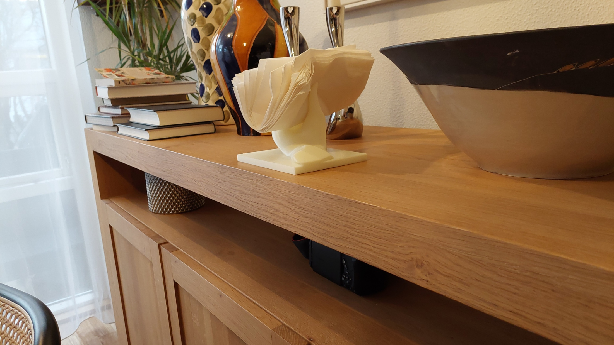

Project 3
Instructions
Design models for 3D printing that could not be done with subtractive manufacturing (additive vs subtractive). Print the item. 3D Scan an object, e.g. by photogrammetry. Show the progress on your home page.
Process
My idea was to 3d scan my hand in a shape such that it could serve as a guitar mount. My first attempt was to use 3D Zephyr as was recommended. It can use images to construct 3D models. I began by holding my guitar, then removing the guitar from the hand trying my best to maintain the same hand-shape, then having my father take a video from all angles of my hand. Then I used 3D Zephyr's in-built feature to convert the video to multiple images. I took many videos and made many attempts but 3D zephyr always failed to convert the images to a 3D model, only giving 4 or 5 points for a model.
Later one of my classmates suggested that I use a particular 3D scanning application and scan my hand with an iPhone. They pointed out that an iPhone was required for this purpose and an Android phone, which is what I have, would not suffice. Nonetheless I looked up a 3D scannnig app on the Play Store and found Polycam . With the same method as before I managed to get a perfectly good scan of my hand, I exported the scan in the only available free format which was .GLTF or .glb.
Clearly the scan wasn't perfect as there is some sort of spike sticking out of the back of my hand. The next step was to modify the scan to make it fit for 3D printing.
It's impossible to import glb and GLTF files into fusion so I converted the GLTF file to an obj file online using this website which was found with a quick google search and imported it into Fusion 360
I relied heavily on this video to repair and modify my 3D scan. I began by closing the all holes in the model by clicking on the warning icon that is highlited on the left, and then selecting "close holes" 
Tthe next step was to remove that spike sticking out of my hand. To do that, under the Mesh tab I select Modify -> Plane cut and select Split body in the Type menu. I use the arrows and rotation sliders to get the plane in the right spot to remove the spike.
 This leaves me with another hole which I close using the same method as before
I then noticed that the size of the hand is only a few millimeters, that the scanner didn't capture the actual size of the hand. To fix this I measured the distance between the knuckle of my thumb and the tip of my thumb in Fusion and I measured that same size in real life on my actual hand and scaled the model accordingly under Mesh -> Modify -> Scale Mesh

This turned out to be a poor method as it's difficult to measure between those exact points on my actual hand and we only get a rough estimate. Later it turns out that the hand was too small and the guitar didn't fit. A smarter move would have been to measure the neck of my guitar and determine what the space between the thumb and the rest of the fingers need be for a nice fit.
I then designed a basic square base to support the hand and mount it onto a wall.
Following the instructions in the video referenced earlier I used Tesselate in the Mesh tab to convert the solid body base in to a mesh. This was unnecessary and converting the mesh of the hand in to a solid body might have made more sense as solid bodies are easier to modify in Fusion 360 than Meshes. The advantage of not converting the hand in to a solid body is that it contains lot of mesh nodes and might be result in an error or take long to create.
After spending some time moving the hand in to the position I want relative to the flat platform I combine the two meshes by selecting Modify -> combine and under Operation I select Merge to combine them
To remove rough edges and bumps that came from the scan I used the Smooth Function under the Modify drop-down menu. Lastly I wanted to add holes that could be used to fasten the guitar mount on a wall. I did this by converting the mesh in to a solid body, but I needed to reduce the number of faces on the mesh to reduce complexity. I selected Modify -> Reduce and then Modify-> Convert Mesh to turn it into a solid body so that I could sketch small holes in each of the corners and extrude. The final result can be seen below
Finally I export the model in to Prusa Slicer. In the Prusa Slicer configuration wizard I select the printer we were using which was Prusa MK3+. Finally the G-code was exported from Prusa Slicer on to a USB drive which was plugged in to the 3D printer and printing commenced. It took 17 hours and this was the final product

As stated earlier the hand was too small for the guitar to fit but the hand could be used for other functions
I wanted to make it work as a guitar mount so I tried putting the hand in hot water to soften the plastic and then molding the hand, increasing the space for the guitar. This worked but the guitar keeps slipping down the hand, there's not enough friction between the guitar and the plastic. I plan to glue rubber or some high-friction material on the part of the hand that is in contact with the guitar. I will update the website later.